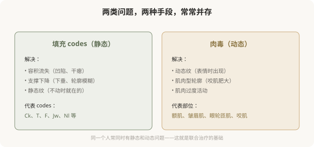
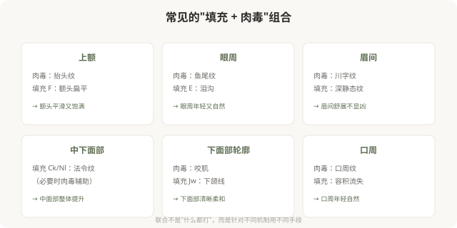

先说结论：MD Codes 的填充 codes 解决的是静态结构问题（容积、支撑、轮廓），而肉毒杆菌素解决的是动态肌肉问题（皱纹、肌肉型轮廓），两者常常需要协作才能达到整体自然的效果。理解联合治疗的思维，能帮你明白为什么有些方案“既要填充又要肉毒”——不是想多卖项目，而是因为静态和动态问题往往同时存在，单一手段解决不了。
静态与动态：联合的逻辑

为什么往往需要联合
很多人老化是“静态 + 动态”问题叠加：
- 额头：有抬头纹（动态，肉毒）+ 额头扁平（静态，F codes 填充）。
- 眼周：有鱼尾纹（动态，肉毒）+ 泪沟（静态，E codes 填充）。
- 中面部：法令纹（静态，Ck/Nl 填充）——但法令纹附近表情肌过度活动也可能加重。
- 下面部：咬肌肥大（动态，肉毒）+ 下颌线模糊（静态，Jw codes 填充）。
单一手段只解决一半问题。比如只打填充不打肉毒，动态纹在笑的时候还会出现；只打肉毒不打填充，容积流失造成的凹陷改善不了。联合治疗针对不同机制，才能整体协调。
联合的几种典型组合

联合的节奏
联合治疗不是“一次性全部打完”，而是有节奏：
- 同期联合：有些部位可以同次治疗进行（如额头肉毒 + 眼周填充）。
- 分次进行：有些情况建议先做一类，观察效果后再做另一类。
- 优先级：先解决最突出的问题，再看是否需要其他。
好的医生会制定联合方案的节奏，而不是“今天把所有能打的都打掉”。这也是避免过度治疗的重要原则。
联合 ≠ 过度
需要警惕的是：联合治疗不等于“什么都打”。有些人明明只有一个问题（比如只有鱼尾纹），却被推荐“全套联合方案”——这是过度治疗。
合理的联合基于“确实存在多种问题”，而不是“套餐更划算”。判断标准是：每个推荐的项目，是否都有明确的问题指向？如果没有，那它可能是销售而非医疗。
面诊时如何理解联合方案
当医生推荐联合方案时，你可以问：
- 我同时有哪些问题（静态 + 动态）？
- 每个项目针对的是哪个问题？
- 哪些是必须的，哪些是可选的？
- 节奏怎么安排？一次还是分次？
- 总剂量和累计费用大概多少？
能逐项解释“为什么需要”的联合方案，比打包推荐的，更值得信任。
一个认知
MD Codes 视角下的联合治疗，本质上是在说：面部问题是多维的，单一手段往往不够。理解这一点，能让你接受“既填充又肉毒”的合理性，也能识别“什么都打”的过度治疗——区别在于每个项目是否有明确的问题指向。
本文用于健康教育，不能替代面诊和个体化评估；具体联合方案须由具备资质的医师根据个体情况制定。